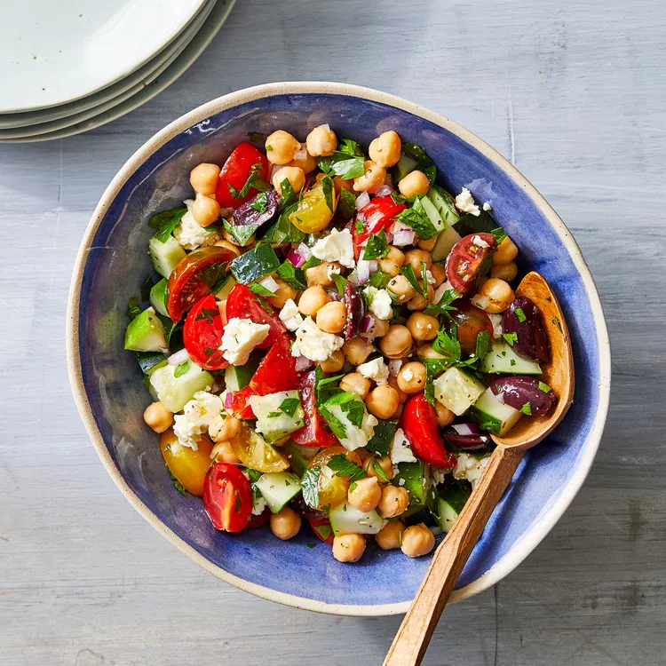

Chopped Summer Chickpea Salad with Olives & Feta

Description
Perfect salad to kick off summer. Refreshing appetizer with an
olive oil and red wine vinegar dressing, finished off with parsley and
crumbled feta cheese. Super quick and easy to make.
Ingredients
- 1 (15 ounce) can no-salt-added chickpeas, rinsed
- 1 cup diced cucumber
- 1 cup quartered cherry tomatoes
- 1/4 cup finely chopped red onion
- 1/4 cup halved Kalamata olives
- 1/4 cup crumbled feta
- 1/3 cup chopped parsley
- 2 tablespoons olive oil
- 2 tablespoons red wine vinegar
- 1/4 teaspoon garlic powder
- 1/4 teaspoon salt
- 1/4 teaspoon ground pepper
Steps
- Whisk oil, vinegar, garlic powder, salt and pepper in a large bowl.
- In same bowl, add chickpeas, cucumber, tomatoes, parsley, onion,
olives and feta.
- Toss to coat.